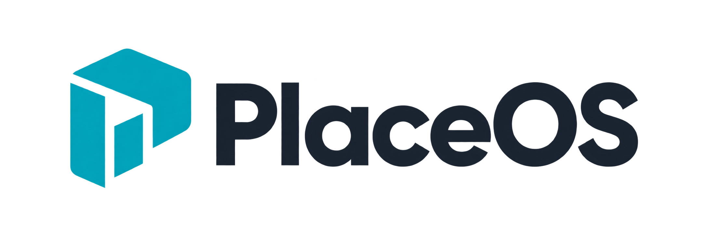

입점 노트 / 01PlaceOS를 시작한 이유
공실을 보며,
끊긴 창업의 흐름을
생각했습니다.
창업과 재창업의 사이클을
다시 연결할 수 없을까?
Place → Platform
상권을 읽고
Product → Page
공간을 살펴보고
Price → Posting
가격대를 비교하고
Promotion → Program
검증을 준비합니다
PlaceOS가 시작된 질문 →01 / 03

입점 노트 / 01창업과 재창업의 사이클을
다시 연결할 수 없을까?
창업과 재창업의 사이클이 끊긴 자리
SNS·AI·IT 데이터로 디지털 재정의
사람들이 창업을 더 잘 준비하는 것
디지털로 재정의한 부동산 정보로
창업과 재창업의 준비를 돕습니다.
Platform에서 읽고, Page에서 살펴보고
Posting에서 비교하고, Program으로 확인
어떤 고객과 업종이 있는 상권인지,
우리 아이템의 후보 무대를 살펴봅니다.
주변 업종과 인구 흐름을 살펴봅니다.
업종 추천을 검토의 출발점으로 씁니다.
기준일·출처·대상 범위를 확인합니다.
검토할 상권을 정했다면,
그 안에서 후보 자리를 살펴볼 차례입니다.
이 상권은 어떤 플랫폼인가?
이 플랫폼 안에 어떤 공간을 놓을까?
어느 건물, 어느 층을 볼지.
입점 후보 공간을 구체적으로 확인합니다.
후보 공간의 분포를 지도에서 살펴봅니다.
층별 목록과 건물 정보를 확인합니다.
거리뷰로 주변 환경을 살펴봅니다.
후보 공간을 찾았다면,
어떤 비용 수준으로 준비할지 비교합니다.
이 플랫폼 안에 어떤 페이지를 놓을까?
이 자리에서 어떤 가격대로 준비할까?
공간을 골랐다면, 다음은 가격대.
입점 조건과 비용의 가정을 비교합니다.
임대료와 실제 권리금 조건을 확인합니다.
고급화·가성비·기능중심을 비교합니다.
입력 조건과 계산 가정을 함께 읽습니다.
이 아이템과 자리가 맞는지,
작게 실행하고 확인할 방법을 준비합니다.
어떤 가격대의 공간을 준비할까?
어떤 검증으로 다음 결정을 내릴까?
팝업·가오픈·MVP로 실행하고,
무엇을 확인할지 먼저 정합니다.
아이템·가설·기간·예산을 정리합니다.
모객 초안과 자리·연계 후보를 준비합니다.
측정 방법·목표선·기각 조건을 정합니다.
상권 → 공간 → 가격대 → 검증.
다음 결정을 위한 근거를 쌓는 흐름입니다.
예비창업자·새 아이템을 검토하는 창업자
정해 둔 지표로 판단하고 계획을 조정